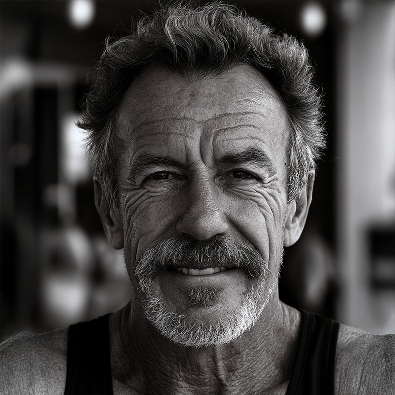

Advocating for Youth in the Juvenile Justice System

Though not biologically related to the family, 'Pop' was the true foundation of the Ryker household. He met Elizabeth (Gran) long before she became a wealthy chemist, falling in love with her beautifully chaotic mind and giving her the space and unwavering support she needed to figure herself out.
Armed with a psychology degree not for money, but simply because he wanted to help people, Pop spent decades working within the grueling juvenile justice system. He was a guardian, a mediator, and a fiercely protective father figure who raised Ethel with boundless patience.
His loss in the tragic car accident that also claimed Elizabeth was a devastating blow to the community.
In Ethel's music. Pop and Gran are the world of The Drop; the crash that took them both becomes Grief; the years around it run through Ride and My Story. Ethel still keeps him close on veX.